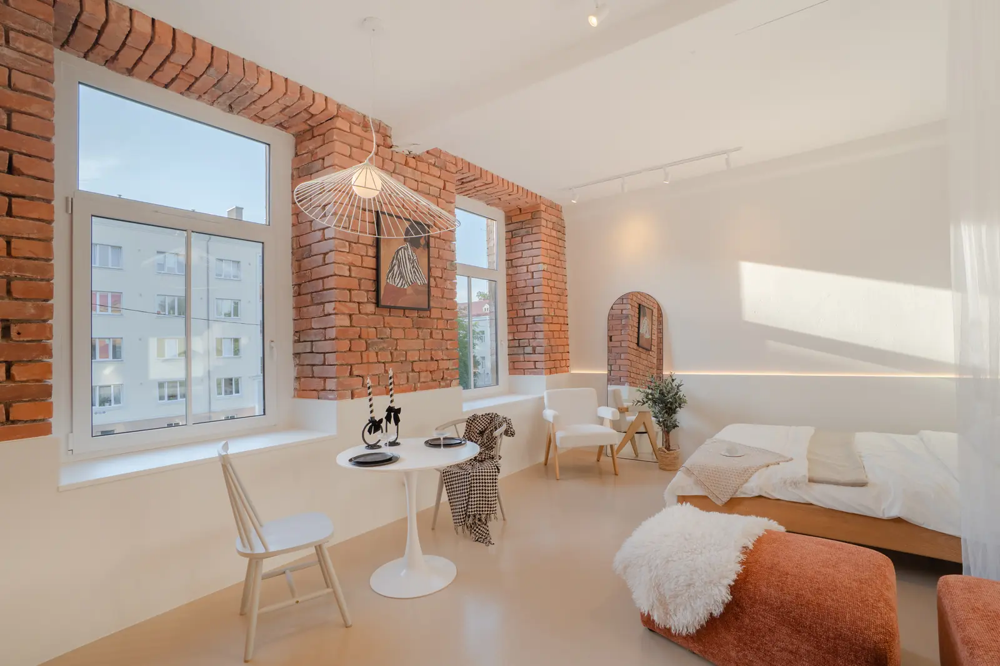
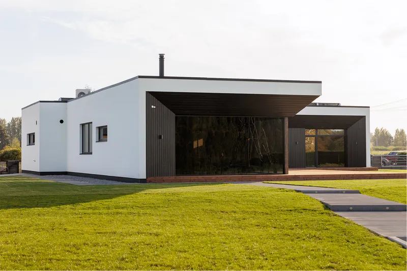

Kuidas fotod aitavad maakleril müügiesinduslepingut võita
Lühivastus
Müüja ei oska hinnata maakleri läbirääkimisoskust ega turutunnetust – neid ta ei näe. Ta näeb ainult seda, mida maakler talle näitab. Fotod on ainus osa maakleri tööst, mis on müüjale esitlusel kohe nähtav – ja seepärast ka kõige otsem viis konkurendist eristuda.
Müügiesinduslepingu võitmise hetk on kummaline: sa pead tõestama midagi, mille tulemust ei saa veel näidata. Müüja kutsub kaks-kolm maaklerit, kõik räägivad umbes sama juttu turust ja hinnast, ja siis tuleb tal valida.
Millega ta valib? Enamasti kolme asjaga: sümpaatiaga, pakutud hinnaga ja sellega, kes tundub kõige pädevam. Esimest ei saa juhtida, teine on ohtlik võidupind. Kolmas on see, kus fotod tööd teevad.
Miks just fotod
Mõtle sellele müüja vaatenurgast. Ta ei näe, kuidas sa läbi räägid. Ta ei tea, kui hästi sa turgu tunned. Ta ei näe sinu andmebaasi ega kontakte.
Aga ta näeb kohe ja ilma selgitusteta:
- milline näeb välja objekt, mida sa eelmisel kuul müüsid;
- kas su kuulutused paistavad portaalis välja või kaovad ära;
- kas sinu tehtud töö näeb välja kallim või odavam kui konkurendi oma.
Fotod on ainus tõend, mis on müüjale esitluslaual koheselt loetav. Ja kui sinu näited on selgelt paremad kui see, mida ta portaalis igapäevaselt näeb, teed sa ühe lausega ära argumendi, mille peale teised kulutavad kakskümmend minutit.


Kuidas fotosid esitlusel kasutada
- Näita tervet komplekti, mitte parimaid kaadreid. Kolm parimat fotot on igal maakleril. Terve komplekt ühest objektist – kakskümmend kaadrit, kõik ühte nägu – on see, mis vahet näitab.
- Näita võrdlust. Ava müüja juuresolekul portaal ja keri tema piirkonna kuulutusi. Seejärel näita oma objekti. Vahe teeb argumendi sinu eest ära.
- Ütle, mis see maksab. „Professionaalne pildistamine on minu teenuses sees“ on tugev lause, sest müüja teab, et see on päris kulu. Konkreetne summa muudab lubaduse kontrollitavaks.
- Seo see ajaga. „Pildid on käes 48 tunniga ja kuulutus läheb üles kolmandal päeval“ on lause, mida müüja mäletab õhtul, kui ta otsustab.
Numbrid, mida esitlusel kasutada
Kui vajad esitlusele argumenti, mis ei ole sinu enda arvamus, siis need on avalikult kontrollitavad:
- Redfini analüüs: professionaalselt pildistatud kodud hinnavahemikus $200 000 – $1 000 000 müüdi 3400–11 200 dollarit kõrgema lõpphinnaga.
- VHT Studios: professionaalselt pildistatud kodud müüsid 32% kiiremini – 89 päeva versus 123.
Mõlemad on USA andmed ja Eesti kohta sama põhjalikku uuringut ei ole. Esitlusel tasub see ka ise ära öelda – aus viide on tugevam kui viide, mille müüja ise hiljem üles otsib ja avastab, et see käis teise turu kohta. Terve arvutuse Eesti numbritega tegime siin.
Kulu, mis tuleb tagasi ühe lepinguga
Teeme lihtsa tehte. Ütleme, et korteri pildistamine maksab 85€ ja sinu vahendustasu 150 000€ tehingult on 3% ehk 4500€.
Foto on siis umbes 1,9% sinu tasust. Kui see aitab võita ühe lepingu aastas, mis oleks muidu läinud konkurendile, on kogu aasta fotokulu tagasi teenitud mitmekordselt. Ja kui ta seda ei tee, on ta ikkagi ostnud sulle kiirema müügi ja rahulolevama kliendi.
Üks asi, mida mitte teha
Ära luba esitlusel professionaalseid fotosid ja tee neid siis ise telefoniga, kui objekt osutub väikeseks. Müüja mäletab lubadust ja võrdleb tulemust – ning just sealt tulevad hilisemad pinged ja kehvad soovitused.
Kui objekt on nii väike, et foto ei mahu eelarvesse, on ausam öelda seda ette. Selle kohta on meil ka eraldi arutelu üüripindade näitel.
Regulaarsetele tellijatele on olemas igakuine pakett: prioriteetne broneering, kokkulepitud töötlusstiil ja fikseeritud hind. Lisaks soovitusprogramm, mis maksab 10% igast õnnestunud pildistamisest.
Kinnisvarabüroodele